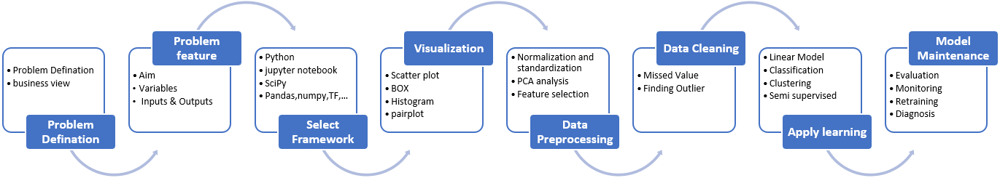
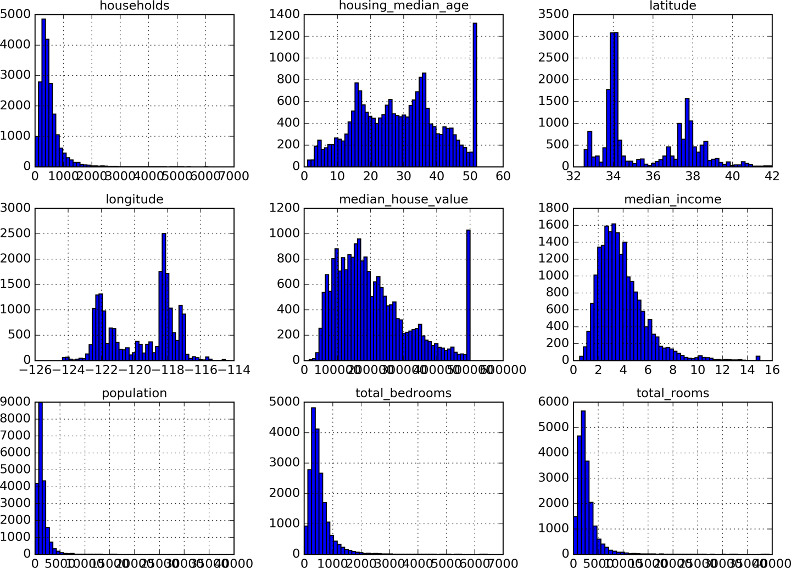

The Zillow App
The Zillow app is based on the end to end machine learning example in Chapter 2 of Geron’s book. We can go through this end to end example during a recitation.
Although the ML project checklist provided in Appendix B of Garon’s book is extensive (we will go through this list in the lecture as we go through your first ML application) for now focus on the eight steps as shown below.
 Steps in workflow (from here)
As discussed the data pipeline is responsible for providing the training datasets if the aim is to train (or retrain) a model. For the purposes of this lecture we assume that we deal with small data aka. data fit in the memory of today’s typical workstations/laptops (< 16 GB). Therefore you will be given a URL from where compressed data files can be downloaded. For structured data, these files when uncompressed will be typically CSV. For unstructured they will be in various formats depending on the use case. In most instances, ML frameworks that implement training will require certain transformations to optimize the format for the framework at hand (see TFrecords in tensorflow).
Appendix B of Garon’s book goes into more detail on the steps suggested to be followed in an end to end ML project.
Key Questions
- Is the dataset appropriate for training?

Any unexpected ranges, any range heterogeneity, any clipping? Do we face long-tails? What options do we have to glean the data?
What will happen if we remove the following line from the
split_train_setfunction?shuffled_indices = np.random.permutation(len(data))